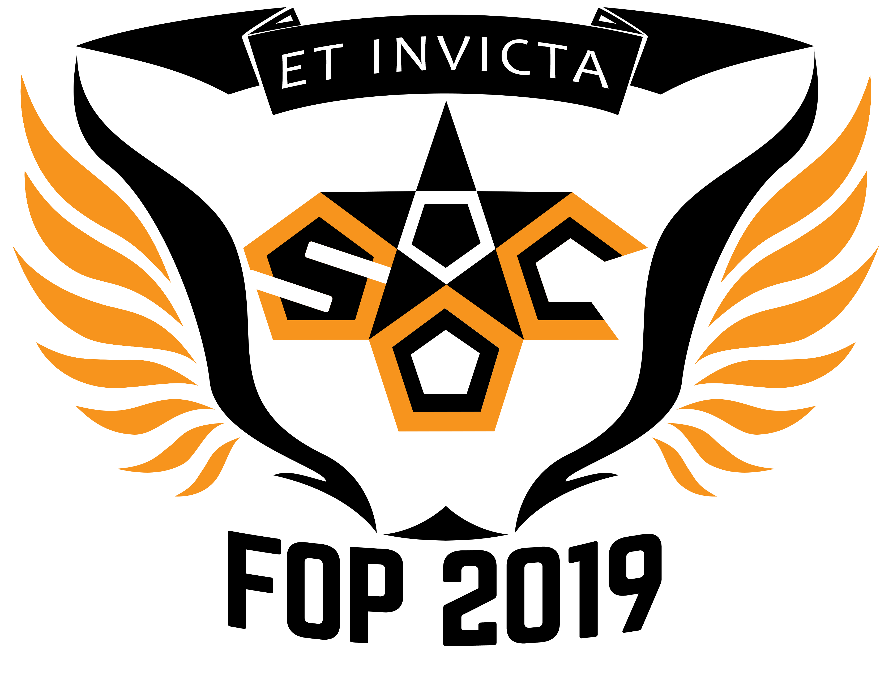

School of Computing FOP 2019
Excited to start university life at the School of Computing?
Or do you simply want to make some friends and have fun?
CHECK BACK HERE
NUS Computing Freshmen Orientation Projects (FOP) 2019
presents: ET INVICTA.

With an exciting lineup of events, we will help you
integrate into our Computing family in no time. At FOP, not
only do you get the opportunity to meet other incoming
freshmen, you will also meet seniors who can provide
valuable advice to follow you through your University years.
Join us this summer for the best freshmen experience you’ll
ever have!
Timeline of events
-
8 - 11 JuneFreshmen Social Camp
-
20 JuneRAG Commencement
-
31 June - 3 JulyFreshmen Orientation Camp
-
31 June - 3 July (continued)Freshmen Orientation Camp
-
To be confirmedAcademic Day
-
21 - 24 JulyFreshmen Orientation Week
-
27 JulyNUSSU FLAG Day
-
10 AugustNUSSU Rag & Flag Day
-
23 AugustBASH: Geek on Fleek

Freshmen Social Camp
FSC is where it all begins! The kickstarter of FOP leads
the way with exciting and fun-filled activites.

Freshmen Orientation Camp
The second extension of FOP, FOC provides opportunities
for freshmen to make new friends and forge strong bonds!

Freshmen Orientation Week
The last FOP camp, FOW aims to forge strong bonds
between freshmen and familiarise them with SoC!

RAG
RAG is an annual performance put up by individual
faculties and halls to thank our sponsors for their
generosity towards our beneficiaries.

BASH: Geek on Fleek
Geek on Fleek is the perfect curtain closer for FOP,
centred around celebrating each individual's character
and confidence!